BIG LAKE Gestão
Manual de uso
Para o Carlos e o Paulo · versão 0.9.1
Este manual mostra, passo a passo, as tarefas do dia a dia da sorveteria no programa. Cada
parte tem uma figura da tela. Guarde perto do computador da loja.
O que tem aqui
- Abrir, fechar e o alto da tela
- A tela inicial
- Todo dia: as vendas do balcão
- Pedido de cliente
- Chegou mercadoria
- Produção e receitas
- Perdas
- Contas a pagar
- Sócios: o fim do mês
- Patrimônio e manutenções
- Relatórios e a Gordurinha
- Cópia de segurança e pen drive
- Errei! Como corrigir
- O primeiro dia (com o Lucas)
1. Abrir, fechar e o alto da tela
- Para abrir, dê dois cliques no ícone BIG LAKE da área de trabalho.
-
Para fechar, clique no X do canto da janela. Ao fechar, o programa faz sozinho uma
cópia de segurança no computador e no pen drive (se ele estiver ligado).
- Tudo o que você confirma fica gravado na hora. Se a luz acabar, nada se perde.
No alto de todas as telas tem:
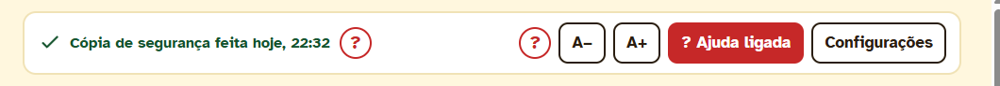
| Aviso da cópia |
Diz quando foi feita a última cópia de segurança. Em vermelho ou amarelo, pede atenção (por exemplo: falta o pen drive). |
| ? vermelho |
Passe o mouse ou toque nele para ler uma explicação curta daquela parte da tela. |
| A− A+ |
Diminuem ou aumentam a letra de todo o programa. |
| ? Ajuda ligada |
Esconde ou mostra todos os botões ?. |
| Configurações |
Cópia de segurança, tamanho da letra, histórico, dados da empresa e este manual (Abrir o manual). |
O menu amarelo da esquerda leva a todas as telas. A bolinha vermelha no ícone de Contas a pagar mostra quantas contas vencem logo; a do ícone de Produção e Receitas, quantos custos subiram.
2. A tela inicial
É a primeira tela ao abrir. Mostra o resumo do mês e o que precisa de atenção.
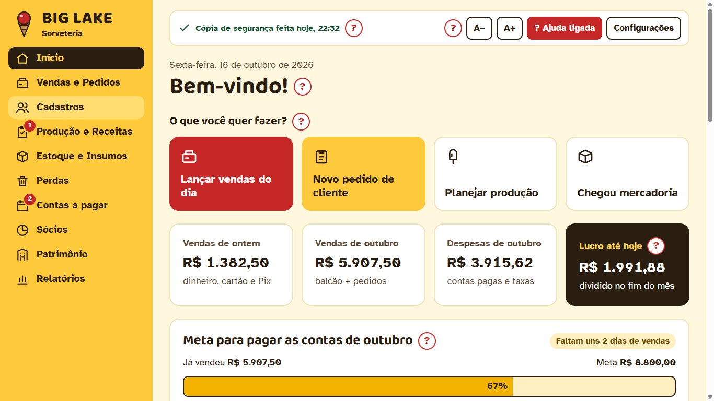
- O que você quer fazer? Quatro botões grandes para as tarefas do dia: lançar as vendas, novo pedido, planejar a produção e chegou mercadoria.
- Cards do mês: vendas de ontem, vendas do mês, despesas e o lucro até hoje.
- Meta para pagar as contas: quanto já vendeu e quanto falta para pagar todas as contas do mês. Depois disso, o que entrar é lucro.
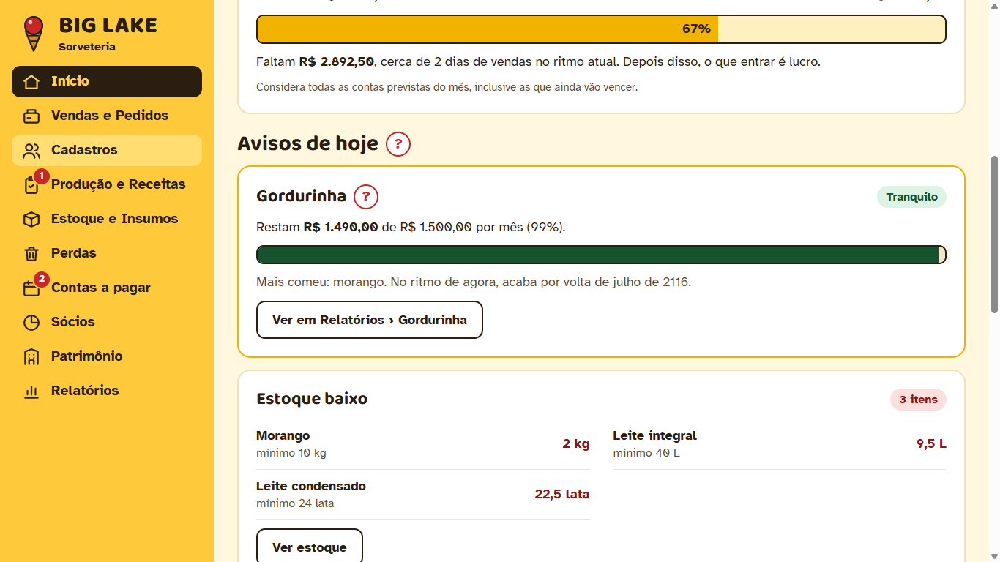
Avisos de hoje: a Gordurinha, o estoque baixo, o que vai vencer, as contas para pagar, o custo que subiu e os
últimos pedidos. Só aparece o que precisa de atenção. Cada aviso tem um botão que leva à tela certa.
3. Todo dia: as vendas do balcão
No fim do dia, lance o total que entrou no balcão. Não é preciso lançar venda por venda.
- Na tela inicial, toque em Lançar vendas do dia.
- Confira a data (já vem com hoje).
- Digite quanto entrou em dinheiro, Pix, débito e crédito (os totais da maquininha).
- O programa mostra o total do dia, as taxas da maquininha e quanto fica para a sorveteria.
- Toque em Salvar vendas de hoje.
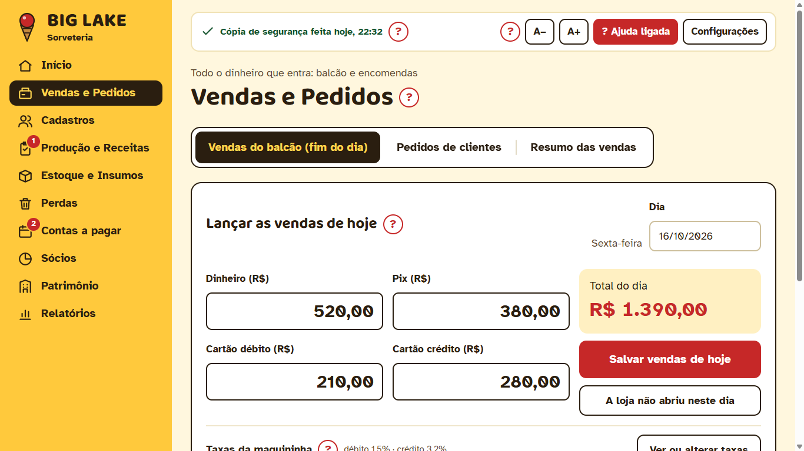
A loja não abriu (feriado)? Toque em A loja não abriu neste dia. Esqueceu um dia? Escolha a data
do dia que passou e lance. Lançou errado? Escolha o dia de novo e corrija.
A aba Resumo das vendas mostra o dia e o mês, e avisa se algum dia ficou sem lançamento.
4. Pedido de cliente
- Toque em Novo pedido de cliente (ou Vendas e Pedidos › Pedidos de clientes).
- Escolha o cliente e confira a data.
- Toque nos produtos para colocar no pedido e digite a quantidade de cada um.
- Escolha como o cliente pagou. O pedido é sempre pago na hora.
- Toque em Salvar pedido. Depois, Imprimir comprovante se o cliente quiser.
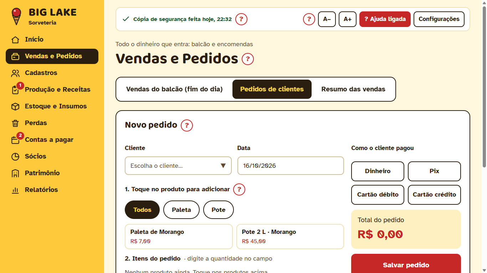
O preço é o de atacado da categoria. Cliente novo se cadastra em Cadastros › Clientes.
5. Chegou mercadoria
- Na tela inicial, toque em Chegou mercadoria.
- Já está cadastrado: escolha o item, digite quanto chegou, quanto pagou e a validade.
- Item novo (primeira vez que compra): preencha o nome, se é matéria-prima ou insumo, a medida, a quantidade, o valor pago, o mínimo e a validade.
-
Lançar esta compra em Contas a pagar? Escolha Sim, já paguei (e diga como pagou), Sim, vou pagar depois (e o dia
que vence) ou Não (só se a conta já foi lançada, ou se está cadastrando o que já tinha no estoque). Assim a compra entra no lucro.
- Toque em Salvar. O estoque soma sozinho e o preço do item é atualizado.
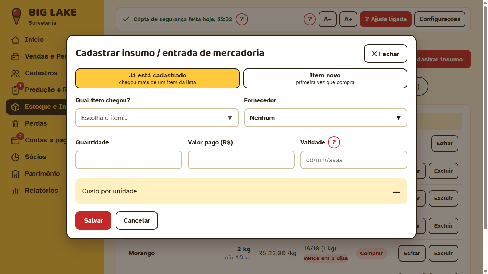
Se o preço subiu, aparece o aviso O custo subiu na tela inicial e em Produção, na aba Avisos (a bolinha vermelha no ícone de Produção, no menu, diz quantos há), com o quanto o lucro de
cada produto caiu.
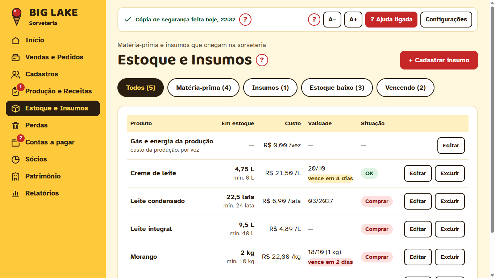
6. Produção e receitas
Planejar e registrar a produção
- Abra Produção e Receitas. Escolha a receita.
- Diga quantas receitas vai fazer (½, 1, 2…). A tabela mostra o que a receita usa e o que tem no estoque.
- Se faltar algo, aparece Falta comprar com o custo estimado.
- Depois de fazer, digite quantas saíram e toque em Registrar produção. O estoque baixa sozinho.
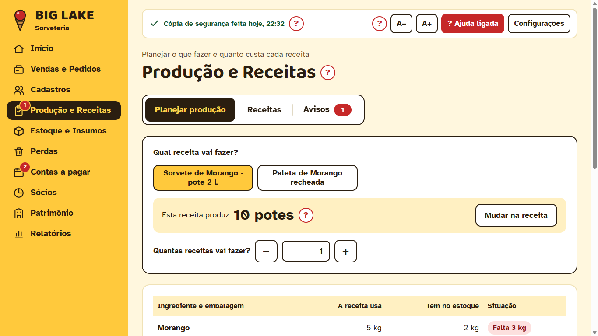
Receitas: custo e lucro de cada
Na aba Receitas fica o custo de cada paleta, pote ou picolé e quanto sobra de lucro no balcão e no atacado.
O preço de venda é da categoria (todas as paletas têm o mesmo preço): mudar o preço numa receita muda para toda a categoria.
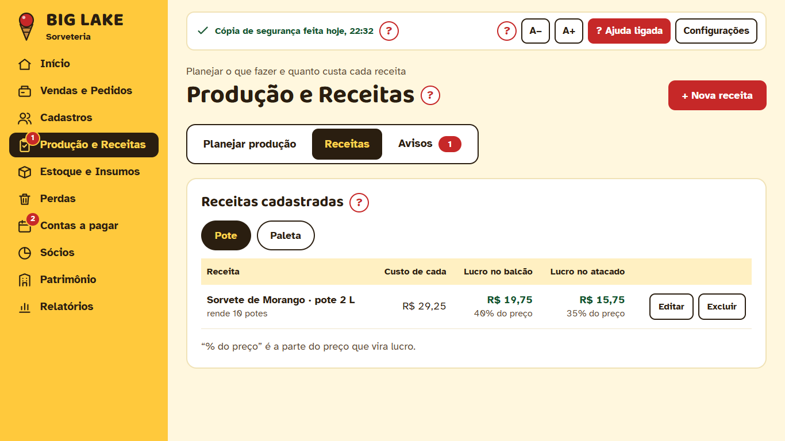
7. Perdas
Anote tudo o que se perdeu: o que estragou aqui, matéria-prima vencida e trocas feitas nos clientes.
- Abra Perdas e toque em + Registrar perda.
- Escolha o que se perdeu: produtos prontos, matéria-prima ou troca em cliente (escolha o cliente).
- Toque nos itens e digite a quantidade de cada um. O valor aparece sozinho.
- Escolha por quê e toque em Salvar perda.
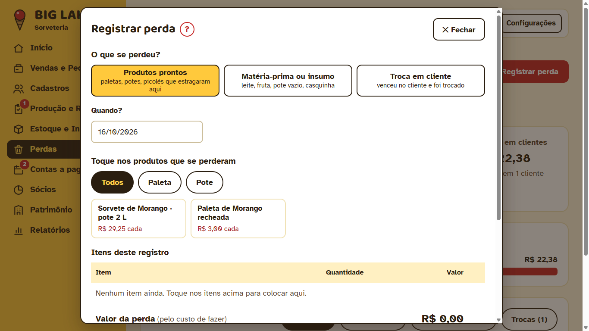
Matéria-prima perdida sai do estoque sozinha. As perdas não entram nas despesas; aparecem no relatório de Perdas.
8. Contas a pagar
- Abra Contas a pagar e toque em + Nova conta.
- Preencha o que é, o valor, o vencimento e o tipo. Conta de todo mês (aluguel, luz)? Em Repete todo mês?, toque em Sim: a do mês seguinte aparece sozinha no dia 1º.
- Para pagar, toque em Marcar como paga e diga como pagou e o dia.
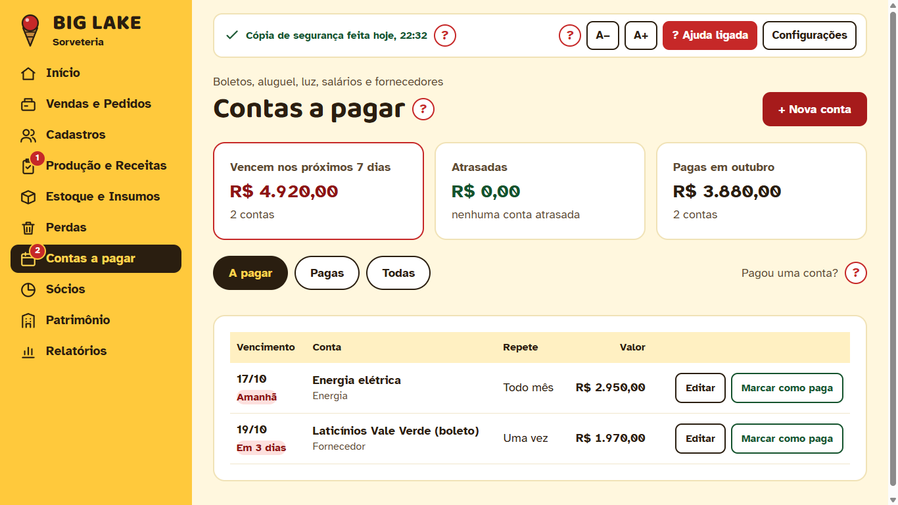
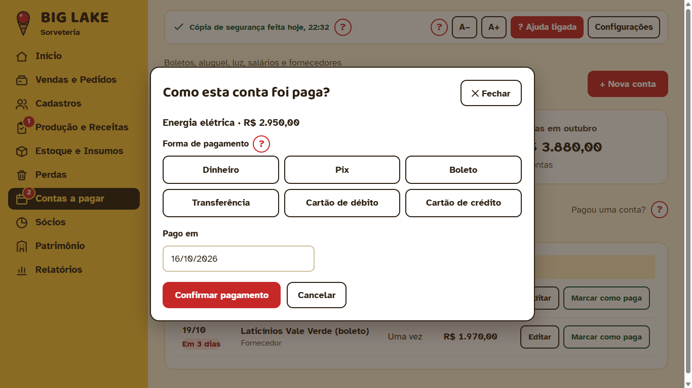
Pagou com o cartão pessoal do Carlos ou do Paulo? Escolha o cartão certo: o valor volta para ele como
reembolso na tela Sócios.
9. Sócios: o fim do mês
A tela Sócios mostra o que entrou, o que saiu e o lucro líquido para dividir. Embaixo, quanto cada um recebe:
a parte do lucro, mais os reembolsos, menos as retiradas do mês.
- Use ‹ e › para ver outros meses.
- Pegou dinheiro durante o mês? Toque em + Registrar retirada.
- A divisão (60% / 40%) muda com − e +, e vale do mês escolhido em diante.
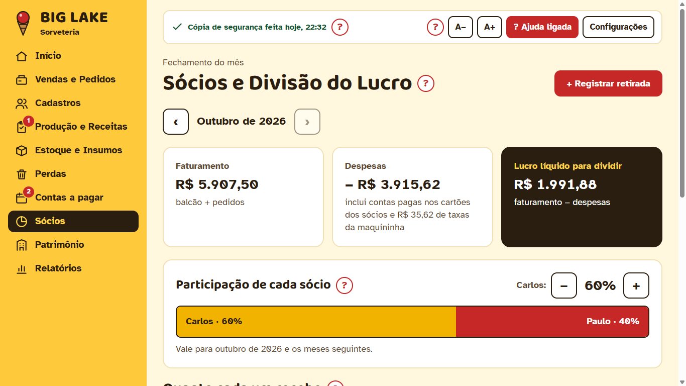
10. Patrimônio e manutenções
- Bens da empresa: furgão, máquinas, freezers, móveis. Toque em + Cadastrar bem.
- Revisão ou conserto: na linha do bem, toque em Manutenção. Preencha o que foi feito, quem fez, o valor e a garantia.
- Diga se já está paga. O valor vai sozinho para Contas a pagar.
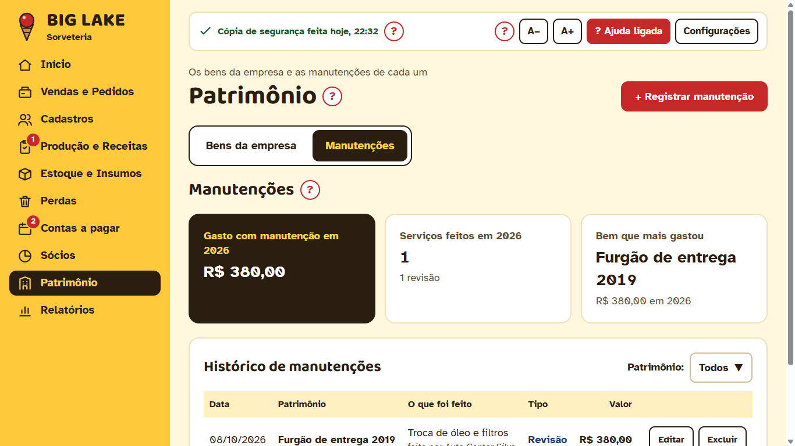
Para corrigir uma manutenção, use o Editar dela aqui: a conta muda junto.
11. Relatórios e a Gordurinha
Escolha o relatório na lista e o mês. Todos podem ser Imprimir ou Salvar em PDF (para o contador). Ao tocar em Imprimir, aparece a folha do jeito que vai sair; escolha a impressora e quantas cópias e toque em Imprimir.
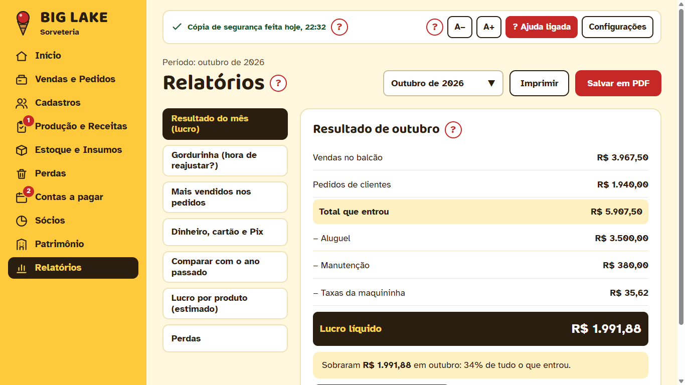
| Resultado do mês | Tudo o que entrou menos tudo o que saiu: o lucro líquido. |
| Gordurinha | A folga posta nos preços no último reajuste. Mostra quanto ainda resta e quanto subir os preços. |
| Mais vendidos nos pedidos | Os produtos e os clientes que mais compraram. |
| Dinheiro, cartão e Pix | Quanto entrou em cada forma e as taxas da maquininha. |
| Comparar com o ano passado | O mês contra o mesmo mês do ano anterior. |
| Lucro por produto | Quais produtos deixam mais dinheiro no bolso (estimativa). |
| Perdas | O que se perdeu no mês, quem mais trocou e o maior motivo. |
A Gordurinha
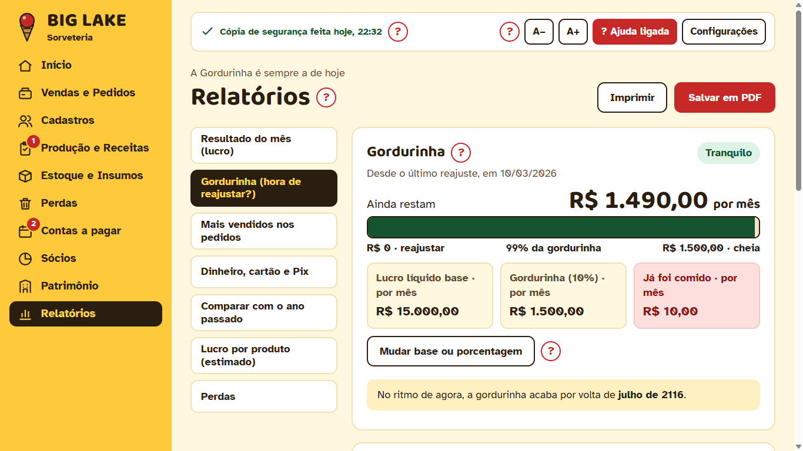
Cada aumento de ingrediente, embalagem ou conta fixa come um pedaço da gordurinha. Quando ela fica
Hora de reajustar, veja em Reajuste de preços quanto subir, mude os preços em Produção e Receitas
e toque em Já reajustei os preços: a conta começa de novo.
12. Cópia de segurança e pen drive
- O programa copia tudo ao abrir, a cada 2 horas e ao fechar, numa pasta do computador.
- Ao fechar, copia também no pen drive, se ele estiver ligado. Deixe o pen drive ligado e, de vez em quando, leve-o para casa.
- Em Configurações, Fazer cópia agora copia na hora.
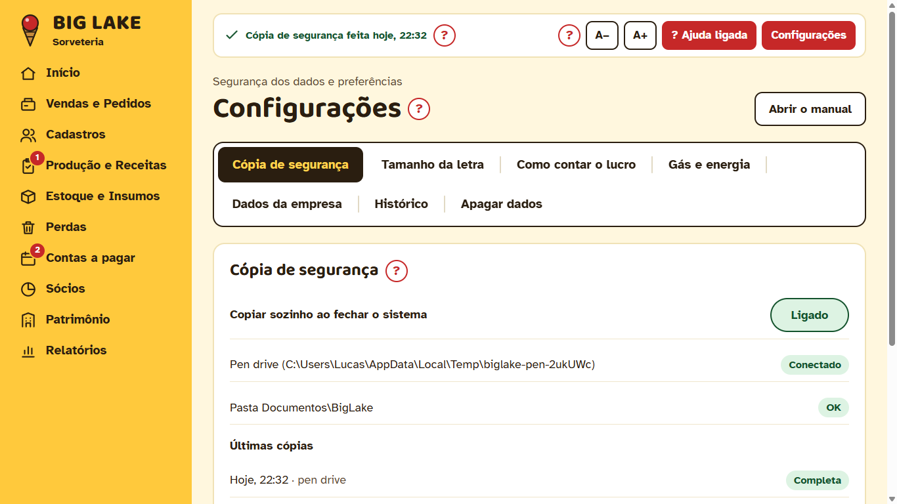
Restaurar uma cópia volta os dados para como estavam naquele dia (o que foi feito depois some). Antes de
restaurar, o programa guarda uma cópia de como está. Na dúvida, chame o Lucas.
13. Errei! Como corrigir
- Quase toda lista tem Editar: abre o mesmo quadro já preenchido. Corrija e toque em Salvar alterações.
- Excluir sempre pergunta Sim / Não. Depois de excluir, aparece Desfazer para voltar.
- Pedido errado? Pode corrigir ou cancelar (com Desfazer).
- Tudo o que é feito fica no Histórico (em Configurações), com data e hora, em frases simples.
Não dá para excluir o que está em uso: por exemplo, cliente com pedido ou categoria com produtos. O programa explica o motivo.
14. O primeiro dia (com o Lucas)
O programa começa vazio. No primeiro dia, preencham nesta ordem:
- Configurações › Dados da empresa: nome, CNPJ, telefone e endereço (saem no comprovante).
- Configurações › Cópia de segurança: ligue o pen drive e toque em Fazer cópia agora.
- Configurações › Como contar o lucro: confira as opções (já vêm com a sugestão).
- Vendas e Pedidos › Taxas da maquininha: as % de débito e crédito e em quantos dias o dinheiro cai.
- Estoque e Insumos: cadastre a matéria-prima e as embalagens que tem hoje (Item novo), com o mínimo de cada.
- Produção e Receitas › Receitas: cada receita com os ingredientes, as embalagens, quanto rende e os preços de balcão e atacado da categoria.
- Cadastros › Produtos à venda: o que vende nos pedidos (paleta, pote, caixa) ligado à receita.
- Cadastros › Clientes e Fornecedores.
- Contas a pagar: as contas fixas do mês, com Repete todo mês.
- Patrimônio: os bens da empresa.
- Relatórios › Gordurinha: o lucro líquido de um mês normal (o contador sabe), a % (10) e a data do último reajuste.
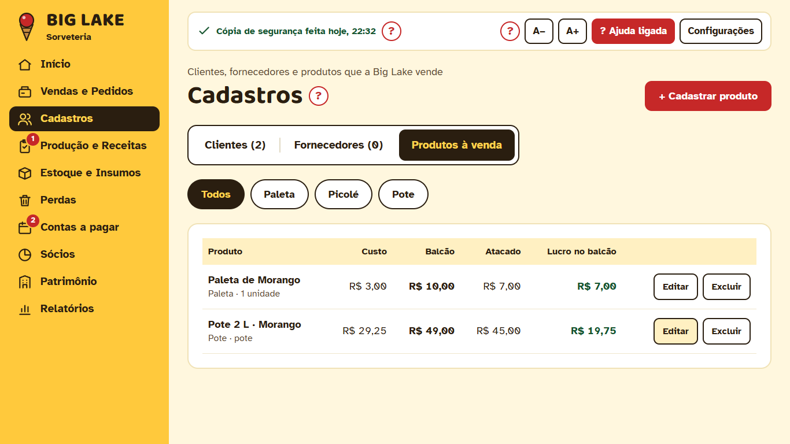
Depois disso, o dia a dia é: lançar o balcão, os pedidos, o que chegou, a produção, as perdas e pagar as contas.